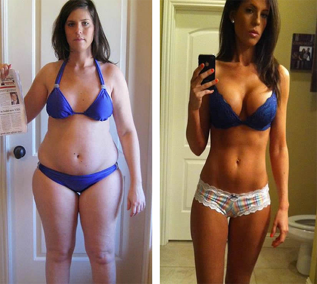
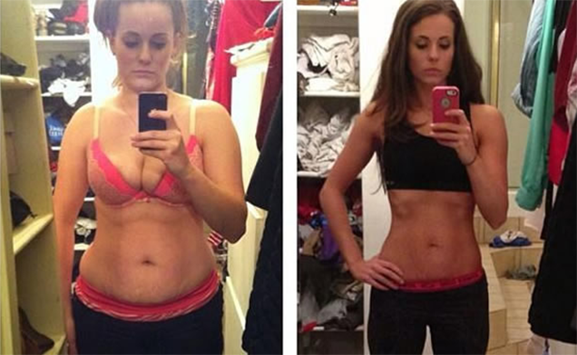

Kenna Shell used Oprah’s method to lose 41.7 lbs in just 2.5 months.
Well, we here on the Doctors were a little skeptical of this Pure White Kidney Bean Extract. Even after pouring though mountains of research. While I had an educated opinion, I still had no personal proof that the Pure White Kidney Bean Extract option was worth the time. So, with my editors blessing, I decided to go out and put the product to the test myself. What better way to find out the truth that to conduct my own study?
«The Magic Weight Loss Cure for Every Body Type» - Dr.Oz.
To get started, I volunteered to be the guinea pig. I applied online for a bottle of Pure White Kidney Bean Extract. Pure White Kidney Bean Extract is one of the most credible and trustworthy diet supplement suppliers on the market. It included a 100% Money Back Guarantee of the product and it did not try to fool me into agreeing to additional hidden offers. Another reason why I chose Pure White Kidney Bean Extract is because it is the most concentrated and purest Pure White Kidney Bean Extract on the market. This would give me the most accurate results for my test.

Before & After my 9 Week Test - 36 lbs LOST! - Read Week by Week Below
*Sponsored Content Provided by Pure White Kidney Bean Extract*
In a study published in the journal Lipids in Health & Disease, subjects taking Pure White Kidney Bean Extract lost an average of 17 pounds in 28 days without diet or exercise.
Pure White Kidney Bean Extract contains no stimulants.
Pure White Kidney Bean Extract has been found to increase metabolism, boosting weight loss by more than 800%.
Studies have shown a 39% reduction in cholesterol and an average 2 inch reduction in belly fat within 28 days.
Helps Eliminate Bad Toxins That Have Built Up Over the Years
Removes 'Sludge' From the Walls of the Colon
Helps Get Rid of Gas and Bloating
Helps Regulate the Metabolism
My 9 Week Test: Pure White Kidney Bean Extract & Step 2 Name
The Pure White Kidney Bean Extract arrived within 4 days of having placed my order online for the trial supplies.
After one week on the diet I was surprised at the dramatic results. My energy level was up, and I wasn’t even hungry, an apparent side effect of the Pure White Kidney Bean Extract which curbs the appetite.
I honestly felt fantastic.
And I didn’t even change anything about my daily routine. On day 7 I got on the scale and couldn’t believe my eyes. I had lost 8 lbs. But I still wasn’t convinced as they say you lose a lot of water at the beginning of any diet. I wanted to wait and see the results in the upcoming weeks. But it sure was looking up! I now weighed under 150 lbs for the first time in years!
Week three
After three weeks, I started the week off with even more energy and was actually sleeping more soundly than before. I was no longer waking up during the night and tossing and turning because my body was actually able to relax (this is a result of getting rid of the toxins I think, a great benefit of the Pure White Kidney Bean Extract). Plus I still managed to lose another 5 lbs, putting me at an unbelievable 13 lbs of weight loss, in just 3 weeks.
I must admit that I’m starting to believe that this diet is more than just a gimmick.
Week four
After 4 weeks all my doubts and skepticism had absolutely vanished! I am down, 2 full dress sizes, after losing another 3 lbs. And I still have a ton of energy. Quite often, around the third week of other diets, you tend to run out of steam. But with the Pure White Kidney Bean Extract my energy levels don’t dip, but remain steady throughout the day. I no longer need that cat nap around 3pm in the afternoon! And I am even noticing that my stomach is digesting food so much better as a result of the Pure White Kidney Bean Extract supplement. No more bloating or embarrassing gas
Week nine
After the Ninth week, my final results were shocking. I lost an unbelievable 36 lbs of fat since starting the Pure White Kidney Bean Extract diet! Actually everyone on the Doctors is kicking themselves for not having volunteered to be the guinea pig. Using the Pure White Kidney Bean Extract in the last five weeks I lost 21 more lbs. To be honest I really don’t have much more left to lose, and I’ve never looked sexier! I am definitely going to continue taking the Pure White Kidney Bean Extract afterwards because it has so many antioxidants and vitamins that makes my skin look unbelievable. It even worked better than Green Coffee and Garcinia Cambogia!
“I couldn’t be any happier with the results.
I Lost 36 lbs body fat in 9 Weeks, No Special Diet, No Intense Exercise”
Conclusion: Like us, here on the Doctors, you might be a little doubtful about the effects of this diet, but you need to try it for yourself; the results are real. After conducting our own personal study we are pleased to see that people really are finding success with it (myself included ). And you have nothing to lose except unwanted weight! Follow the links to order your Pure White Kidney Bean Extract I have provided and know that you are getting a quality product that works; no strings attached! Works even better than Green Coffee and Garcinia Cambogia.
You can reach your weight loss goals with the Pure White Kidney Bean Extract.
- Jennifer Hasman
EDITOR'S NOTE: For a limited time, the Official Suppliers of Pure White Kidney Bean Extract™ have agreed to offer a Special Promotion to our readers. This comes with a 100% guarantee to lose weight or your money back.